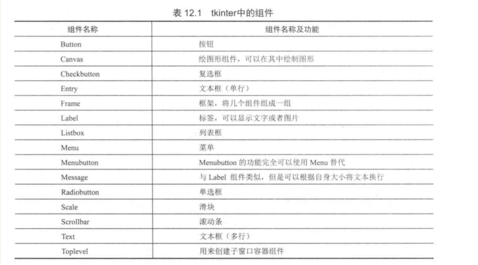
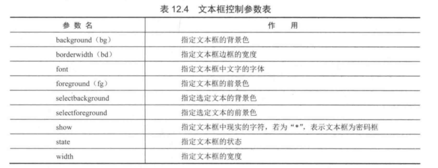
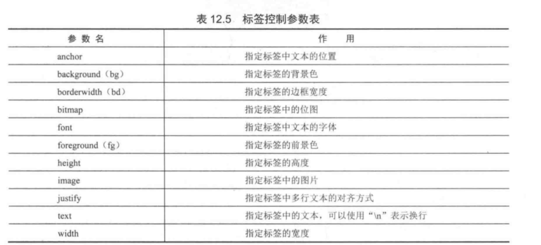
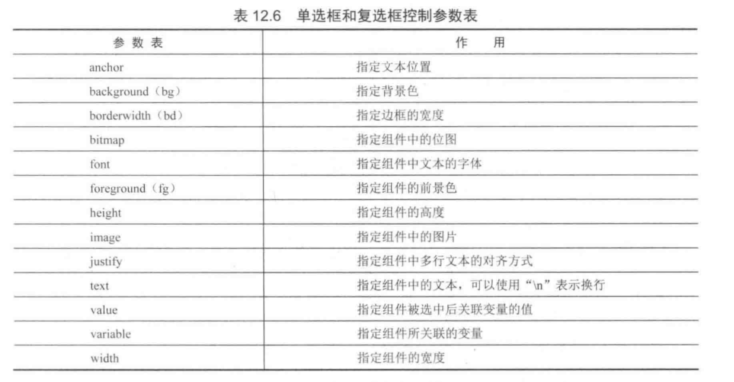
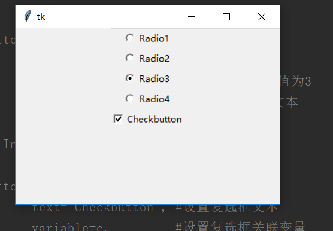
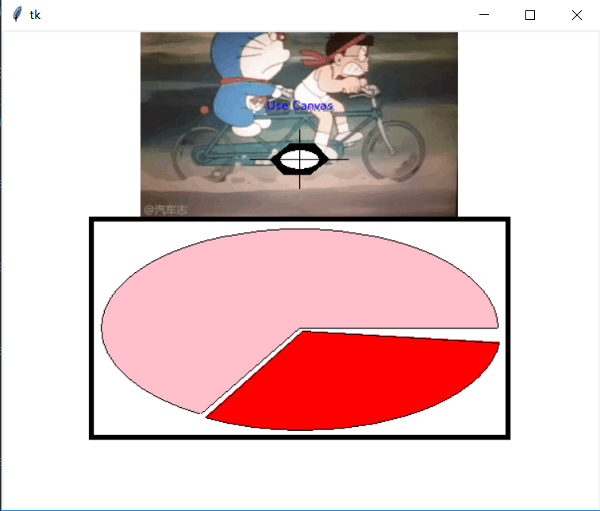

Contents
23.1.4. TkinterGUI模块¶
thinter核心组件，包括了15种核心组件¶
创建GUI程序第一步¶
#!/usr/bin/env python
#-*- coding:utf8 -*-
# auther; 18793
# Date：2019/7/22 13:31
# filename: 01.创建windows窗口.py
import tkinter #导入thinter模块
root = tkinter.Tk() #生成root主窗口
root.mainloop() #进入消息循环
创建具有标签和按钮组件的主窗口¶
#!/usr/bin/env python
#-*- coding:utf8 -*-
# auther; 18793
# Date：2019/7/22 13:35
# filename: 02.具有标签和按钮组件的主窗口.py
import tkinter
root = tkinter.Tk() # 生成root主窗口
label = tkinter.Label(root, text="Hello tkinter") #生成标签
label.pack() #将标签添加到root主窗口
button1 = tkinter.Button(root, text="Button1") #生成button1
button1.pack(side=tkinter.LEFT) #将button1添加到root主窗口
button1 = tkinter.Button(root, text="Button2") #生成button2
button1.pack(side=tkinter.RIGHT) #将button2添加到root主窗口
root.mainloop() #进入消息循环
在主窗口中创建各种不同的按钮¶
#!/usr/bin/env python
#-*- coding:utf8 -*-
# auther; 18793
# Date：2019/7/22 14:43
# filename: 03.在主窗口中创建不同的按钮.py
import tkinter #导入tkinter模块
root = tkinter.Tk()
button1 = tkinter.Button(root,
anchor=tkinter.E, #指定文本对齐方式
text='Button1', #指定按钮的文本
width=40, #指定按钮的宽度，相当于40个字符
height=5) # 指定按钮的高度，相当于5行字符
button1.pack() #将按钮添加到窗口
button2 = tkinter.Button(root,
text='Button2',
bg="blue") #指定按钮的背景色
button2.pack()
button3 = tkinter.Button(root,
text='Button3', #指定按钮的文本
width=14, #指定按钮的宽度，相当于14个字符
height=1) # 指定按钮的高度，相当于1行字符
button3.pack() #将按钮添加到窗口
button4 = tkinter.Button(root,
text='Button4', #指定按钮的文本
width=60, #指定按钮的宽度，相当于40个字符
height=5, # 指定按钮的高度，相当于5行字符
state=tkinter.DISABLED) #指定按钮为禁用状态
button4.pack() #将按钮添加到窗口
root.mainloop()
文本框¶
文本框参数表 
#!/usr/bin/env python
#-*- coding:utf8 -*-
# auther; 18793
# Date：2019/7/22 14:53
# filename: 04.文本框.py
import tkinter
root = tkinter.Tk()
entry1 = tkinter.Entry(root, #生成单行文本框组件
show="*",) #输入文本框中的字符被显示为*
entry1.pack() #将文本框添加到窗口中
entry2 = tkinter.Entry(root, #生成单行文本框组件
show="#，", #输入文本框中的字符被显示为*
width = 50) # 将文本框的宽度设置为50
entry2.pack()
entry3 = tkinter.Entry(root, #生成单行文本框组件
bg = "red", # 将文本框中的背景色设置为红色
fg = "blue") # 将文本框中的前景色设置为蓝色
entry3.pack()
entry4 = tkinter.Entry(root, #生成单行文本框组件
selectbackground = "red", # 将选中文本的背景色设置为红色
selectforeground = "gray") # 将选中文本的前景色设置为蓝色
entry4.pack()
entry5 = tkinter.Entry(root,
state = tkinter.DISABLED) # 将文本设置为禁用
entry5.pack()
edit1 = tkinter.Text(root, #生成多行文本框组件
selectbackground = "red", #将选中文本的背景色设置为红色
selectforeground = "gray") #将选中文本的前景色设置为蓝色
edit1.pack()
root.mainloop()
标签¶
标签控制参数表 
演示在主窗口中显示创建的各种不同类型的标签组件
#!/usr/bin/env python
# -*- coding:utf8 -*-
# auther; 18793
# Date：2019/7/22 23:26
# filename: 05.标签.py
"""
演示在主窗口中显示创建的各种不同类型的标签组件
"""
import tkinter # 导入tkinter模块
root = tkinter.Tk()
labell = tkinter.Label(root,
anchor=tkinter.E,
bg="blue", # 设置文本的位置
fg="red", # 设置标签背景色
text="Python", # 设置标签中的文本
width=30, # 设置标签的宽度为30
height=5) # 设置标签的高度为5
labell.pack()
label2 = tkinter.Label(root,
text="Python GUI\n tkinter", # 设置标签中的文本,在字符串中使用换行符
justify=tkinter.LEFT, # 设置多行文本为左对齐
width=30,
height=5)
label2.pack()
label3 = tkinter.Label(root,
text="Python GUI\n tkinter", # 设置标签中的文本,在字符串中使用换行符
justify=tkinter.RIGHT, # 设置多行文本为右对齐
width=30,
height=5)
label3.pack()
label4 = tkinter.Label(root,
text="Python GUI\n tkinter", # 设置标签中的文本,在字符串中使用换行符
justify=tkinter.CENTER, # 设置多行文本为居中对齐
width=30,
height=5)
label4.pack()
root.mainloop()
菜单¶
在tkinter中，菜单组件的添加与其他的组件有所不同。菜单要使用创建的主窗口的config方法添加到窗口中。
#!/usr/bin/env python
# -*- coding:utf8 -*-
# auther; 18793
# Date：2019/7/22 23:34
# filename: 06.菜单.py
import tkinter
root = tkinter.Tk()
menu = tkinter.Menu(root) # 生成菜单
submenu = tkinter.Menu(menu, tearoff=0) # 生成下拉菜单
submenu.add_command(label="Open") # 向下拉菜单中添加Open命令
submenu.add_command(label="Save") # 向下拉菜单中添加Save命令
submenu.add_command(label="Close") # 向下拉菜单中添加Close命令
menu.add_cascade(label="File", menu=submenu) # 将下拉菜单添加到菜单中
submenu = tkinter.Menu(menu, tearoff=0) # 生成下拉菜单
submenu.add_command(label="Copy") # 向下拉菜单中添加Copy命令
submenu.add_command(label="Paste") # 向下拉菜单中添加Paste命令
submenu.add_separator() # 向下拉菜单中添加分隔符
submenu.add_command(label="Cut") # 向下拉菜单中添加Cut命名
menu.add_cascade(label='Edit', menu=submenu) # 将下拉菜单添加到菜单中
submenu = tkinter.Menu(menu, tearoff=0) # 生成下拉菜单
submenu.add_command(label="About") # 向下拉菜单中添加About命令
menu.add_cascade(label="Help", menu=submenu) # 将下拉菜单添加到菜单中
root.configure(menu=menu)
root.mainloop()
添加弹出式菜单¶
#!/usr/bin/env python
# -*- coding:utf8 -*-
# auther; 18793
# Date：2019/7/22 23:45
# filename: 07.添加弹出式菜单，绑定到右键.py
import tkinter
root = tkinter.Tk()
menu = tkinter.Menu(root, tearoff=0) # 创建菜单
menu.add_command(label="Copy") # 向弹出式菜单中添加Copy命令
menu.add_command(label="Paste") # 向弹出式菜单中添加Paste命令
menu.add_separator() # 向弹出式菜单中添加分隔符
menu.add_command(label="Cut") # 向弹出式菜单中添加Cut命令
def popupmenu(event): # 定义右键事件处理函数
menu.post(event.x_root, event.y_root) # 显示菜单
root.bind("<Button-3>", popupmenu) # 在主窗口中绑定右键事件
root.mainloop()
单选框和复选框¶
#!/usr/bin/env python
# -*- coding:utf8 -*-
# auther; 18793
# Date：2019/7/24 18:14
# filename: 08.单选框和复选框.py
import tkinter
root = tkinter.Tk()
r = tkinter.StringVar() # 使用StringVar生成字符串变量用于单选框组件
r.set('1') # 初始化变量的值
radio = tkinter.Radiobutton(root, # 生成单选框组件
variable=r, # 设置单选框关联的变量
value="1", # 设置单选框中关联变量的值，即r的值
text="Radio1") # 设置单选框显示的文本
radio.pack()
radio = tkinter.Radiobutton(root, # 生成单选框组件
variable=r, # 设置单选框关联的变量
value="2", # 当选中该单选框时，r的值为2
text="Radio2") # 设置单选框显示的文本
radio.pack()
radio = tkinter.Radiobutton(root, # 生成单选框组件
variable=r, # 设置单选框关联的变量
value="3", # 当选中该单选框时，r的值为3
text="Radio3") # 设置单选框显示的文本
radio.pack()
radio = tkinter.Radiobutton(root, # 生成单选框组件
variable=r, # 设置单选框关联的变量
value="4", # 当选中该单选框时，r的值为3
text="Radio4") # 设置单选框显示的文本
radio.pack()
c = tkinter.IntVar() # IntVar生成整型变量用于复选框
c.set(1)
check = tkinter.Checkbutton(root,
text="Checkbutton", #设置复选框文本
variable=c, #设置复选框关联变量
onvalue=1, #当选中复选框时，c的值为1
offvalue=2) #当末选中复选框时，c的值为2
check.pack()
root.mainloop()
print(r.get())
print(c.get())
运行输出 
当indicatoron参数传递值为0时，组件将被绘制成按钮的形式。被选中的组件处于按下状态
indicatoron=0
#!/usr/bin/env python
# -*- coding:utf8 -*-
# auther; 18793
# Date：2019/7/24 19:43
# filename: 09.在窗口显示按钮、单选-复选框.py
import tkinter
root = tkinter.Tk()
r = tkinter.StringVar() # 使用StringVar生成字符串变量用于单选框组件
r.set('1') # 初始化变量的值
radio = tkinter.Radiobutton(root, # 生成单选框组件
variable=r, # 设置单选框关联的变量
value="1", # 设置单选框中关联变量的值，即r的值
indicatoron=0, # 将单选框绘制成按钮样式
text="Radio1") # 设置单选框显示的文本
radio.pack()
radio = tkinter.Radiobutton(root, # 生成单选框组件
variable=r, # 设置单选框关联的变量
value="2", # 当选中该单选框时，r的值为2
indicatoron=0,
text="Radio2") # 设置单选框显示的文本
radio.pack()
radio = tkinter.Radiobutton(root, # 生成单选框组件
variable=r, # 设置单选框关联的变量
value="3", # 当选中该单选框时，r的值为3
indicatoron=0,
text="Radio3") # 设置单选框显示的文本
radio.pack()
radio = tkinter.Radiobutton(root, # 生成单选框组件
variable=r, # 设置单选框关联的变量
value="4", # 当选中该单选框时，r的值为3
indicatoron=0,
text="Radio4") # 设置单选框显示的文本
radio.pack()
c = tkinter.IntVar() # IntVar生成整型变量用于复选框
c.set(1)
check = tkinter.Checkbutton(root,
text="Checkbutton", # 设置复选框文本
variable=c, # 设置复选框关联变量
indicatoron=0,
onvalue=1, # 当选中复选框时，c的值为1
offvalue=2) # 当末选中复选框时，c的值为2
check.pack()
root.mainloop()
绘制图形¶
参数可以查阅《21天学通Python》
#!/usr/bin/env python
# -*- coding:utf8 -*-
# auther; 18793
# Date：2019/7/24 19:50
# filename: 10.绘制图形.py
import tkinter
root = tkinter.Tk()
canvas = tkinter.Canvas(root,
width=600, # 指定Canvas组件的宽度为600
height=480, # 指定Canvas组件的高度为480
bg="white") # 指定Canvas组件的背景色为白色
im = tkinter.PhotoImage(file="Am.gif")
canvas.create_image(300, 70, image=im) # 使用create_image将图片添加到Canvas组件中
canvas.create_text(302, 77, # 使用create_text方法绘制文字
text="Use Canvas", # 所绘制文字的内容
fill="gray") # 所绘制文字的颜色为灰色
canvas.create_text(300, 75, # 使用create_text方法绘制文字
text="Use Canvas", # 所绘制文字的内容
fill="blue") # 所绘制文字的颜色为蓝色
canvas.create_polygon(290, 114, 316, 114, # 使用create_polygon绘制六边形
330, 130, 310, 146, 284, 146, 270, 130)
canvas.create_oval(280, 120, 320, 140, # 使用create_oval绘制椭圆
fill="white") # 设置椭圆用白色填充
canvas.create_line(250, 130, 350, 130) # 使用create_line绘制直线
canvas.create_line(300, 100, 300, 160)
canvas.create_rectangle(90, 190, 510, 410,
width=5) # 使用create_rectangle绘制一个矩形，设置矩形线宽为5像素
canvas.create_arc(100, 200, 500, 400, start=0, extent=240, fill='pink') # 使用create_arc绘制圆弧，设置圆弧的起止角度
canvas.create_arc(103, 203, 503, 403, start=241, extent=112, fill='red') # 使用create_arc绘制圆弧，设置圆弧的起止角度
canvas.pack() # 将Canvas添加到主窗口
root.mainloop()
输出信息
响应操作事件¶
创建一个简单的绘图实例
#!/usr/bin/env python
# -*- coding:utf8 -*-
# auther; 18793
# Date：2019/8/5 17:56
# filename: 11.创建简单的绘图实例.py
import tkinter
class MyButton:
def __init__(self, root, canvas, label, type):
self.root = root
self.canvas = canvas
self.label = label
if type == 0: # 根据类型创建按钮
button = tkinter.Button(root, text='DrawLine', command=self.DrawLine)
elif type == 1:
button = tkinter.Button(root, text='DrawArc', command=self.DrawArc)
elif type == 2:
button = tkinter.Button(root, text='DrawRec', command=self.DrawRec)
else:
button = tkinter.Button(root, text='DrawOval', command=self.DrawOval)
button.pack(side='left')
def DrawLine(self):
"""
DrawLine按钮事件处理函数
"""
self.label.text.set('Draw Line')
self.canvas.SetStatus(0)
def DrawArc(self):
"""
DrawArc按钮事件处理函数
:return:
"""
self.label.text.set('Draw Arc')
self.canvas.SetStatus(1)
def DrawRec(self):
"""
DrawRec 按钮事件处理函数
:return:
"""
self.label.text.set('Draw Rectangle')
self.canvas.SetStatus(2)
def DrawOval(self):
"""
DrawRec 按钮事件处理函数
:return:
"""
self.label.text.set('Draw Oval')
self.canvas.SetStatus(3)
class MyCanvas:
"""
定义Canvas类
"""
def __init__(self, root):
self.status = 0
self.draw = 0
self.root = root
self.canvas = tkinter.Canvas(root, bg='white',
width=600,
height=480)
self.canvas.pack()
self.canvas.bind('<ButtonRelease-1>', self.Draw) # 绑定事件到左键
self.canvas.bind('<Button-2>', self.Exit) # 绑定事件到中键
self.canvas.bind('<Button-3>', self.Del) # 绑定事件到右键
self.canvas.bind_all('<Delete>', self.Del) # 绑定事件到Delete键
self.canvas.bind_all('<KeyPress-d>', self.Del) # 绑定事件到d键
self.canvas.bind_all('<KeyPress-e>', self.Exit) # 绑定事件到e键
def Draw(self, event):
if self.draw == 0:
self.x = event.x
self.y = event.y
self.draw = 1
else: # 根据self.status绘制不同的图形
if self.status == 0:
self.canvas.create_line(self.x, self.y, event.x, event.y)
self.draw = 0
elif self.status == 1:
self.canvas.create_arc(self.x, self.y, event.x, event.y)
self.draw = 0
elif self.status == 2:
self.canvas.create_rectangle(self.x, self.y, event.x, event.y)
self.draw = 0
else:
self.canvas.create_oval(self.x, self.y, event.x, event.y)
self.draw = 0
def Del(self, event):
"""
按下右键或d键则删除图形
:param event:
:return:
"""
items = self.canvas.find_all()
for item in items:
self.canvas.delete(item)
def Exit(self, event):
"""
按下中键或e键则退出
:param event:
:return:
"""
self.root.quit()
def SetStatus(self, status):
"""
设置绘制的图形
:param status:
:return:
"""
self.status = status
class MyLabel:
""" 标签类 """
def __init__(self, root): # 类初始化
self.root = root # 保存引用
self.canvas = canvas
self.text = tkinter.StringVar() # 生成标签引用变量
self.text.set('Draw Line')
self.label = tkinter.Label(root, textvariable=self.text, fg='red', width=50)
self.label.pack(side='left')
root = tkinter.Tk() # 生成主窗口
canvas = MyCanvas(root) # 生成绘图组件
label = MyLabel(root) # 生成标签
MyButton(root, canvas, label, 0) # 生成按钮
MyButton(root, canvas, label, 1)
MyButton(root, canvas, label, 2)
MyButton(root, canvas, label, 3)
root.mainloop()
对话框¶
#!/usr/bin/env python
# -*- coding:utf8 -*-
# auther; 18793
# Date：2019/8/5 18:42
# filename: 12.对话框001.py
import tkinter
import tkinter.messagebox
def cmd():
global n
global buttontext
n = n + 1
if n == 1:
tkinter.messagebox.askokcancel('Python tkiner', 'askokcancel') # 使用askokcancel函数
buttontext.set('skquestion') # 更改按钮上的文字
elif n == 2:
tkinter.messagebox.askokcancel('Python tkiner', 'skquestion') # 使用skquestion函数
buttontext.set('askyeson')
elif n == 3:
tkinter.messagebox.askokcancel('Python tkiner', 'askyeson') # 使用askyeson函数
buttontext.set('showerror')
elif n == 4:
tkinter.messagebox.askokcancel('Python tkiner', 'showerror') # 使用showerror函数
buttontext.set('showinfo')
elif n == 5:
tkinter.messagebox.askokcancel('Python tkiner', 'showinfo') # 使用showinfo函数
buttontext.set('showwarning')
else:
n = 0
tkinter.messagebox.showwarning('Python tkinter', 'showwarning') # 使用showwarning函数
buttontext.set('askokcancel')
n = 0
root = tkinter.Tk()
buttontext = tkinter.StringVar() # 生成关联按钮文字的变量
buttontext.set('askokcancel') # 设置buttontext值
button = tkinter.Button(root, textvariable=buttontext, command=cmd) # 设置事件处理函数
button.pack()
button.mainloop()
3种简单的输入对话框的实例¶
#!/usr/bin/env python
# -*- coding:utf8 -*-
# auther; 18793
# Date：2019/8/5 21:40
# filename: 13.具有3种简单的输入对话框.py
import tkinter
import tkinter.simpledialog # 导入tkSimpleDialog模块
def InStr():
r = tkinter.simpledialog.askstring('Python tkinter', # 创建字符串输入对话框
'Input String', # 指定提示字符
initialvalue='tkinter') # 指定初始化文本
print(r)
def InInt(): # 按键事件处理函数
r = tkinter.simpledialog.askinteger('Python tkinter', 'Input Integer')
print(r) # 创建整数输入对话框
def InFlo(): # 按键事件处理函数
r = tkinter.simpledialog.askfloat('Python tkinter', 'Input Float')
print(r) # 创建浮点数输入对话框
root = tkinter.Tk()
buttonl = tkinter.Button(root, text='Input String', # 创建按钮
command=InStr()) # 指定按钮事件处理函数
buttonl.pack(side='left')
button2 = tkinter.Button(root, text='Input Integer', # 创建按钮
command=InInt()) # 指定按钮事件处理函数
button2.pack(side='left')
button3 = tkinter.Button(root, text='Input Float', # 创建按钮
command=InFlo()) # 指定按钮事件处理函数
button3.pack(side='left')
root.mainloop()
创建文件打开和保存对话框的实例¶
#!/usr/bin/env python
# -*- coding:utf8 -*-
# auther; 18793
# Date：2019/8/5 21:53
# filename: 14.创建文件打开和保存对话框的实例.py
import tkinter
import tkinter.filedialog # 导入tkFileDialog模块
def FileOpen():
r = tkinter.filedialog.askopenfile(title='Python tkinter',
filetypes=[('Python', '*.py *.pyw'), ('All files', '*')])
# 指定文件类型为python程序
# 输出返回值
print(r)
def FileSave():
r = tkinter.filedialog.asksaveasfilename(title='Python tkinter', # 创建保存文件对话框
initialdir=r'D:\GitHub', # 指定初始化目录
initialfile='test2.py',
) # 指定初始化文件
print(r)
root = tkinter.Tk()
button1 = tkinter.Button(root, text="File Open", # 创建按钮
command=FileOpen()) # 指定按钮事件处理函数
button1.pack(side='left')
button2 = tkinter.Button(root, text="File Save", # 创建按钮
command=FileSave()) # 指定按钮事件处理函数
button2.pack(side='left')
root.mainloop()
创建图片、文字实例¶
#绘制图像
from tkinter import *
root=Tk()
root.title("三国名人录")
#root.iconbitmap("souffle.ico")
#窗体尺寸
root.geometry('500x700+600+20') #宽x高+左边距+上边距
def sango_show(event):
#将图片文件声明为全局变量
global img1,img2,img3,img4
#获取按钮文本
ID=event.widget['text']
print(ID)
#加载图片
if ID==sango[0]:
myCanvas.create_image(0,0,anchor=NW,image=img0)
elif ID==sango[1]:
myCanvas.create_image(0,0,anchor=NW,image=img1)
elif ID==sango[2]:
myCanvas.create_image(0,0,anchor=NW,image=img2)
elif ID==sango[3]:
myCanvas.create_image(0,0,anchor=NW,image=img3)
#图片
img0=PhotoImage(file='pictures\\张飞.png')
img1=PhotoImage(file='pictures\\吕布.gif')
img2=PhotoImage(file='pictures\\貂蝉.png')
img3=PhotoImage(file='pictures\\孔明.gif')
#Frame布局
fm1=Frame(root)
fm1.pack(side=TOP,padx=10,pady=10)
fm2=Frame(root)
fm2.pack()
#创建画布
myCanvas=Canvas(fm2,width=460,height=590,bg='black')
myCanvas.pack()
#文字
myCanvas.create_text(230,245,text='三国名人录',
font=("隶书",48),fill='red')
#按钮
sango=['张飞','吕布','貂蝉','孔明']
b=[]
for i in range(4):
b.append(Button(fm1,text=sango[i],font=('KaiTi',32,'bold'),
width=5,height=1))
b[i].pack(side=LEFT,anchor=NW)
b[i].bind('<ButtonRelease-1>',sango_show)
root.mainloop()
创建颜色选择对话框实例¶
#!/usr/bin/env python
# -*- coding:utf8 -*-
# auther; 18793
# Date：2019/8/6 8:26
# filename: 15.颜色选择对话框实例.py
import tkinter
import tkinter.colorchooser
def ChooseColor():
r = tkinter.colorchooser.askcolor(title='Python tkinter') # 创建颜色选择对话框
print(r) # 输出返回值
root = tkinter.Tk()
button = tkinter.Button(root, text='Choose Color', # 创建按钮
command=ChooseColor) # 指定按钮事件处理函数
button.pack()
root.mainloop() # 进入消息循环
自定义对话框¶
#!/usr/bin/env python
# -*- coding:utf8 -*-
# auther; 18793
# Date：2019/8/6 8:56
# filename: 16.自定义对话框.py
import tkinter
import tkinter.messagebox as tkMessageBox # 导入tkMesageBox类
class MyDialog: # 定义对话框类
def __init__(self, root): # 对话框初始化
self.top = tkinter.Toplevel(root) # 生成Toplevel组件
label = tkinter.Label(self.top, text='Please Input') # 生成标签组件
label.pack()
self.entry = tkinter.Entry(self.top) # 生成文本框组件
self.entry.pack()
self.entry.focus() # 让文本框获得焦点
button = tkinter.Button(self.top, text='Ok', # 生成按钮
command=self.Ok) # 设置按钮事件处理函数
button.pack()
def Ok(self): # 定义按钮事件处理函数
self.input = self.entry.get() # 获取文本框中的内容，保存为input
self.top.destroy() # 销毁对话框
def get(self): # 返回在文本框输入的内容
return self.input
class MyButton():
def __init__(self, root, type):
self.root = root
if type == 0:
self.button = tkinter.Button(root, text='Create', command=self.Create) # 设置Create按钮处理函数
else:
self.button = tkinter.Button(root, text='Quit', command=self.Quit) # 设置Quit按钮的事件处理函数
self.button.pack()
def Create(self):
d = MyDialog(self.root) # 生成对话框
self.button.wait_window(d.top) # 等待对话框结束
tkMessageBox.showinfo('Python', 'You input:\n' + d.get()) # 获取对话框中输入值，并输出
def Quit(self): # Quit按钮的事件处理函数
self.root.quit() # 退出主窗口
root = tkinter.Tk()
MyButton(root, 0)
MyButton(root, 1)
root.mainloop()